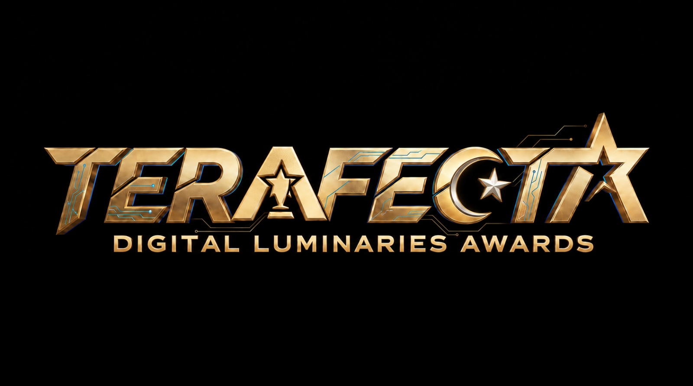

Menerajui
pendidikan.
Memacu digital.
Satu hab untuk program, sumber dan perkhidmatan digital. Menghubungkan warga pendidikan Terengganu dengan akses yang diperlukan.
Semua akses.
Satu destinasi.
Terus ke portal, bahan rujukan dan perkhidmatan SSTP pilihan anda.
TERAFECTA 2026
Portal program, bahan rasmi dan maklumat penyertaan TERAFECTA.
Terokai program → SUMBER & INOVASI↗Digital Nexus
Dashboard, bahan PdP, rekod dan penghantaran bahan guru.
Buka Digital Nexus → DATA & ANALITIK↗Portal Analitik
Akses analitik dan maklumat pertandingan digital SSTP.
Lihat portal → DIREKTORI↗Direktori pegawai
Kenali pegawai SSTP dan semak pegawai USTP mengikut daerah.
Cari pegawai → HEBAHAN↗Info SSTP
Ikuti saluran Telegram untuk hebahan dan maklumat SSTP JPN Terengganu.
Buka saluran Telegram → RUJUKAN↗Dokumen & bahan
Rujuk kemas kini dan pautan bahan yang tersedia di laman SSTP.
Lihat maklumat →
From Enlightenment
to Eminence.
Kenali TERAFECTA Digital Luminaries Awards 2026. Akses maklumat program, video promo dan bahan rasmi melalui portal TERAFECTA.
Video, rakaman siaran langsung dan galeri majlis TERAFECTA 2026.
Kenali pasukan.
Mudah berhubung.
Pilih direktori SSTP atau USTP untuk mencari maklumat pegawai.
Sentiasa terhubung.
Rujukan program, bahan pendidikan dan hebahan SSTP dalam satu ruang.
Pengumuman SSTP
- Portal TERAFECTA 2026 telah dibuka untuk rujukan dan penyertaan.
- Direktori Pegawai USTP 2026 boleh disemak terus melalui direktori laman ini.
- Portal Analitik Pertandingan Digital telah dibuka.
- Pautan program akan dikemaskini dari semasa ke semasa.
Mari berhubung.
Sektor Sumber dan Teknologi Pendidikan
Jabatan Pendidikan Negeri Terengganu
Bandar Marang, 21600 Marang,
Terengganu.